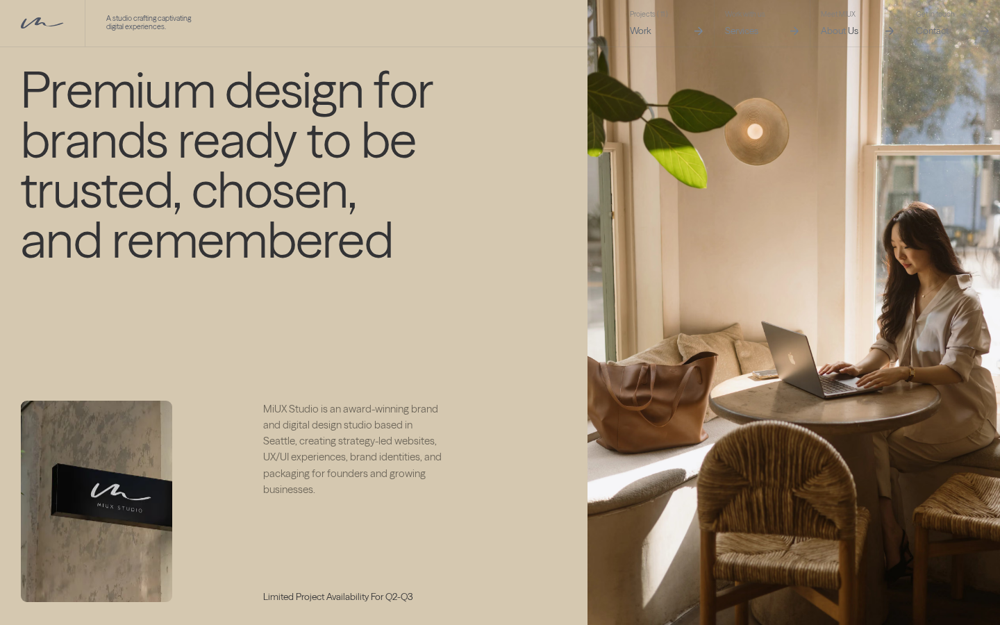

boutique ux studio · warm linen + taupe · signature script logo · hairline column grid · giant thin numerals · circular dial project carousel · lifestyle photography · calm premium
#f7f3ed#333335#d5c8b0#333335#e6e2dc#7b7976#e6e2dc#333335#f7f3ed#986c32#ffffff#986c32